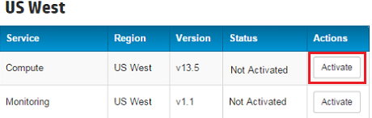
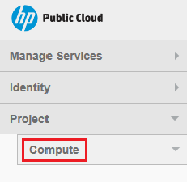
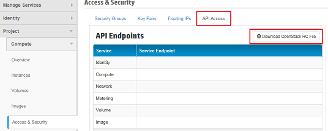

Download the OpenStack RC File
- Log into the Horizon console using the HPE Helion Public
Cloud username and password that you created during registration.
- In the US West section, in the Compute row, click Activate to
activate the Compute service.Activating the Compute service is required
for creating VM instances.

- Click the Project panel and then the Compute sub-panel.

- Download the configuration file (RC file). RC files contain information about a
hosted service, including region, tenant, and other information required to create a
cluster. This RC file has been pre-configured for this sandbox project.
- Click Access & Security and then click the API Access
tab.
- Click Download OpenStack® RC file.
